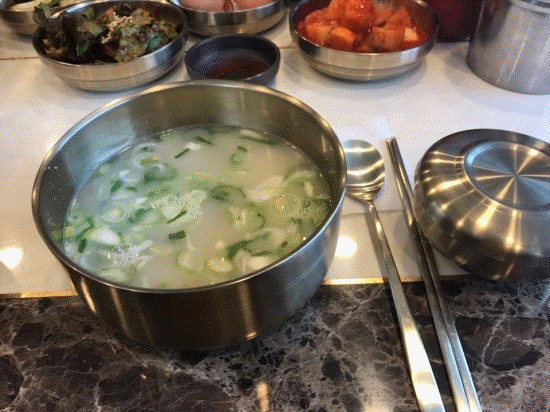

요즘 날씨가 엄청 오락가락하는거같아요ㅜㅜ 어떨때는 춥고 어떨때는 더우니 ㅠㅠ 오늘은 날이 너무 추웠어요 그러다가!! 따뜻한 국물이땡기며 평소랑은 다른메뉴를 먹고싶은 느낌이 들었어요ㅎㅎ 그래서 신시가지를 돌아다니며 찾은곳이 설렁탕 전문점 설가에요~!! 오랜만에 자극적이지 않고 시원한 국물을 맛볼수있어서 너무 좋았던거 같아요!!! 맛있지만 약간 외각에 있어서 사람이 적다는점이 조금 아쉽네요 ㅠㅠ 같이온사람은 갈비탕을 시켜서 먹엇더니 갈비가 완전 많이 들어있어서 마음에 들어요ㅎㅎㅎ 갈비탕도 맛있지만 깍두기와 함께하는 설렁탕이 제맛이여서 추천이에요~!~! 날씨가 더 추워치면 다시한번 먹으로 가봐야겠어요~~ㅎㅎ